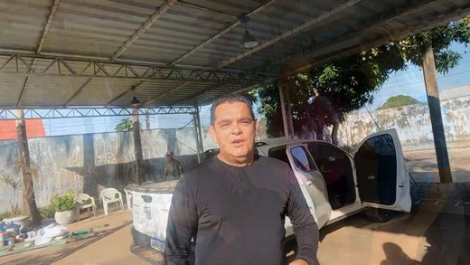

00:01:04.480
Emanuel Júlio fala sob uma cobertura metálica, ao lado de um carro branco com portas abertas.
Macapá (AP) · provável
O apresentador abre a viagem rodoviária de Macapá ao Oiapoque e apresenta o percurso.
Transcrição · 00:00:55 | 00:01:05 | 00:01:14
Turismo Aqui — quadro de vídeo publicado no YouTube